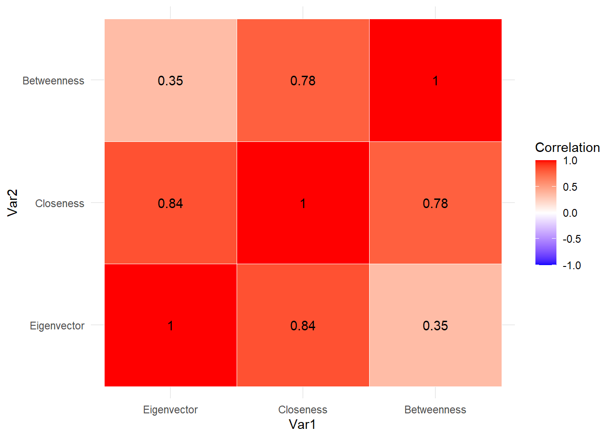
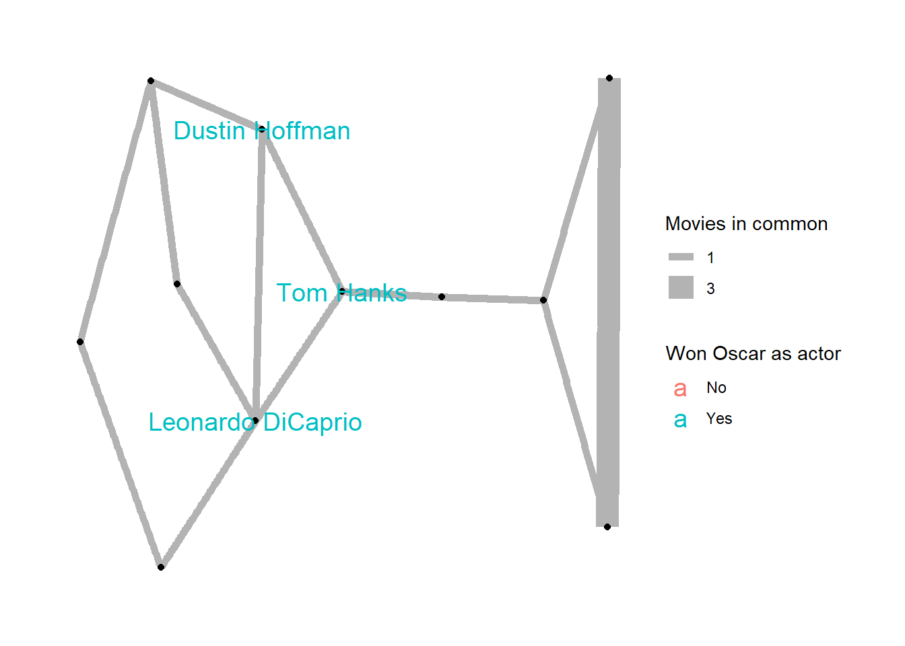

First we need to load our libraries. Personally, for network analysis I prefer network and sna. But I have of course used other packages, so no sweat.
set.seed(555)# Load in libs## Not necessary, but I like how clean itlibs =c("igraph","ggplot2","ggraph","rio")invisible(lapply(libs, library, character.only =TRUE))
Attaching package: 'igraph'
The following objects are masked from 'package:stats':
decompose, spectrum
The following object is masked from 'package:base':
union
Now let us load in the data.
URL ='https://github.com/MarkGScott960/DACCS690C_HW2/raw/main/hollywood.graphml'actorsnet =read_graph(URL, format ='graphml')summary(actorsnet)
IGRAPH 72223c5 UNW- 11 14 --
+ attr: wonOscar (v/n), color (v/c), name (v/c), id (v/c), weight (e/n)
Node centrality Measures
As you showed in the videos and HTML file, I will get the three centrality measures and put them in one nice kable table. I will also disregard the weights, otherwise igraph treats it as distances/costs, but the weight is number of collaborations. Of course, an argument can be made that the weights should be included in the eigenvector measure because igraph treats weights as connection strength; the weights are left out in the eigen_centrality() function because I am comparing all three measures.
# Need to use weights = NA for all because there is a weight# Eigenvector Centralityeigenv =eigen_centrality(actorsnet, weights =NA)$vector #Closenessnodeclose =closeness(actorsnet, normalized = T,weights =NA)# Betweennessbetw =betweenness(actorsnet, normalized = T,weights =NA)# Create dataframeCentralityDF = tibble::tibble(Actor =names(eigenv),Eigenvector = eigenv,Closeness = nodeclose,Betweenness = betw)# Kable tableCentralityDF |> dplyr::mutate(across(where(is.numeric), ~round(.,4))) |> kableExtra::kable()
#Calculate correlationcormat = CentralityDF |>select(Eigenvector, Closeness, Betweenness) |>cor()# make tidy and widecorlong =as.data.frame(as.table(cormat))colnames(corlong) <-c("Var1", "Var2", "Correlation")#Plotggplot(corlong, aes(x = Var1, y = Var2, fill = Correlation)) +geom_tile(color ="white") +geom_text(aes(label =round(Correlation, 2))) +scale_fill_gradient2(low ="blue",mid ="white",high ="red",midpoint =0,limits =c(-1, 1) ) +theme_minimal()

Now for some quick interpretation of this correlation heatmap:
Pair
Correlation
Interpretation
Take away
Closeness vs Betweenness
0.78
Strong positive relationship
Actors who are closer to everyone else in the network also tend to lie on many of the shortest paths between other actors.
Eigenvector vs Closeness
0.84
Strong positive relationship
Actors with high eigenvector centrality have higher closeness. In other words, you can have very influential neighbors which leads to being close to everyone else)
Eigenvector vs Betweenness
0.35
Weak positive relationship
An actor connected to influential actors does not necessarily serve as a bridge between different parts of the network
Overall, we see that all three of our measures of node centrality are positively correlated. The two strongest correlations are between Eigenvector/closeness, and closeness/betweenness. This does, of course make sense. If an ego knew someone who know many people who knew many people, I would have a reasonably larger network because of the increased alter-to-alter ties.
Of course, our dataset has a highly restrictive sample size, so we should not be stating these as facts.
Hub nodes plot
First lets see how many people are notable:
ggplot(CentralityDF, aes(x=Betweenness, y=Closeness)) +theme_classic() + ggrepel::geom_text_repel(aes(label=Actor,size=Eigenvector),show.legend = T,alpha=0.5) # using this instead of geom_text for readability
#Define cutoffImportantCut <-0.8# Get names of the important onesHubNodes = CentralityDF |> dplyr::filter(Eigenvector >= ImportantCut)HubNodes <- HubNodes$ActorV(actorsnet)$label <-ifelse(V(actorsnet)$name %in% HubNodes,V(actorsnet)$name,"")#Relabel attributes for easier readingV(actorsnet)$wonOscar=ifelse(V(actorsnet)$wonOscar==1,'Yes','No')ggraph(actorsnet) +geom_edge_link(aes(edge_width =as.ordered(weight)), color ='grey70') +geom_node_point() +theme_graph(base_family ="sans") +#using sans otherwise getting a wall of warnings (default arial was not playing nice with my OS)geom_node_text(aes(label = label, color =as.factor(wonOscar)), size =5)+labs(edge_width ="Movies in common", color ="Won Oscar as actor")
Using "stress" as default layout
Warning: Using edge_width for a discrete variable is not advised.

Communities investigation
First lets start looking if communities may be present.
As a general rule, if we see a ratio over 1 we can expect standard algorithms to detect communities, which we do indeed see (ratio = 1.98413). However, with only 11 nodes and 14 edges, the null distribution is extremely noisy, so a p = 0.267 means that we cannot rule out that this clustering arose out of chance. I will still proceed to community detection as communities may be present, but our data cannot provide statistically significant evidence.
Warning in cluster_edge_betweenness(actorsnet): Membership vector will be selected based on the highest modularity score.
Source: community/edge_betweenness.c:503